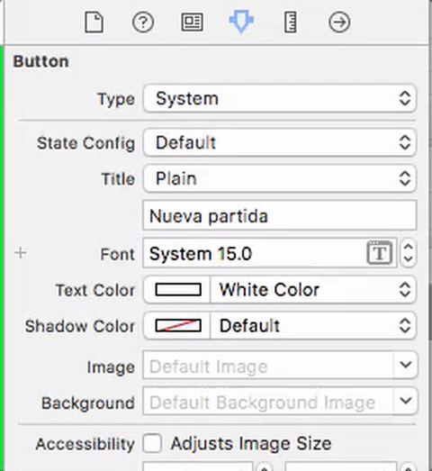

MiniProyecto de iOS (4 puntos)¶
Juego de las siete y media¶
Se propone implementar el conocido juego de cartas de "las 7 y media".
Para simplificar, solo habrá dos jugadores: el usuario contra la máquina que hace de banca. El usuario va pidiendo cartas una a una hasta que se pasa de 7 y medio o decide plantarse. La máquina no va sacando cartas una a una sino que obtiene una puntuación generada al azar.
Para crear el proyecto, como siempre elige la plantilla de single view app. En la segunda pantalla del asistente dale como nombre SieteyMedia .
Estructura de clases del modelo (1 punto)¶
Ampliaremos el modelo que implementamos en la primera sesión. Ya tenemos el enum Palo y las clases Carta y Mano. Vamos a añadir las clases necesarias para el juego: la Baraja y el propio Juego
Clase Baraja¶
todas las cartas de la baraja
- Propiedades:
cartas, un array deCarta - Métodos:
- El Inicializador debe rellenar el array de cartas con todas las cartas de la baraja
repartirCarta: obtiene la última carta de la baraja y la elimina de ella. Podéis hacer esto por ejemplo conpopLast()barajar: debe cambiar al azar el orden de las cartas en elArray. Una forma de implementar esto es usar el métodoshuffle()delArray.
Clase Juego¶
La estructura es libre ya que depende de vuestra implementación. No obstante, tened en cuenta que vais a necesitar métodos para:
- Sumar las cartas que hay en una mano, teniendo en cuenta que el 10,11 y 12 valen medio punto, y el resto su valor
- Que el jugador saque una carta
- Que el jugador se plante
- acabar el juego y calcular el resultado
- ...
Interfaz gráfico simplificado (1 punto)¶
El ViewController contendrá una instancia de la clase Juego.
Es normal que el
ViewControllertenga referencia del modelo. Pero no es aconsejable que también pase al revés. En el modelo no se debería guardar ninguna referencia al controller, para poder reutilizarlo independientemente de la interfaz gráfica. El controller puede enterarse de que ha pasado algo "interesante" (por ejemplo que se acaba el juego) a través de notificaciones.
En esta versión muy simplificada de la interfaz solo aparecen en pantalla tres botones: "pedir carta", "plantarse" y "nueva partida", pero no se ven las cartas gráficamente. Eso sí, el juego debería funcionar correctamente, imprimiendo los mensajes con print.
En esta versión simplificada no es necesario habilitar/deshabilitar los botones según la situación del juego (por ejemplo no hace falta deshabilitar "pedir carta" cuando la partida se ha terminado). No pasa nada si pulsar los botones de forma inconsistente da errores, ya que luego los deshabilitaremos.
Además, para simplificar la mecánica del juego no es necesario que la máquina "saque cartas de verdad". Basta con generar una puntuación al azar e informar al usuario de la puntuación que ha sacado. Para que el juego tenga sentido así primero debería jugar el jugador humano y luego la máquina.
La versión anterior es solo una idea, podéis implementar cualquier variante que queráis, o cualquier mejora, incluyendo que la máquina saque cartas una por una, apostar una cantidad,...
Completar la interfaz (1 punto)¶
En la interfaz completa deberían aparecer pintadas las cartas en pantalla conforme se van repartiendo. Además los botones se deberían habilitar/deshabilitar adecuadamente (por ejemplo si la partida se ha terminado no se puede pedir carta).
Añadir las imágenes de las cartas al proyecto¶
Descomprime el .zip de Moodle con las imágenes de las cartas en png, selecciona todos los archivos y "déjalos caer" dentro de la carpeta de recursos (Assets.xcassets).
Por cada imagen en png creará un image set con el nombre del archivo ( al estilo 1oros, 3copas, ...). Por desgracia solo disponemos de las imágenes de las cartas en baja resolución (@1x).
Cómo dibujar las cartas¶
Cada vez que dibujemos en pantalla una carta estamos añadiendo a la pantalla actual un UIImageView. Tenemos que guardar referencias a todas las imágenes añadidas para poder borrarlas cuando acabe la partida. Definiremos esta propiedad en el view controller para guardarlas
1 2 | //propiedad de ViewController.swift var vistasCartas = [UIImageView]() |
En lugar de dibujar las cartas directamente en su posición, podemos hacerlo fuera de la pantalla (es decir, con el origen del frame en coordenadas negativas) y luego hacer una animación hasta su posición definitiva. La siguiente función dibuja una carta con el efecto descrito. La posicion es el orden de la carta, para que se vayan colocando una al lado de la otra: 1, 2...
En el código de ejemplo usamos un tamaño de carta fijo de 70x100 puntos, en el apartado siguiente se te propone adaptarlo al tamaño real de la pantalla.
Nótese que hablamos de puntos y no de pixeles ya que en código no se usa la resolución física sino una resolución "lógica". Hay dispositivos que tienen distinta resolución física pero usan la misma resolución lógica, lo que simplifica el desarrollo. Podéis ver una tabla con resoluciones físicas y lógicas de distintos dispositivos iOS en http://iosres.com IMPORTANTE: para que la segunda línea de este código funcione tu tipo enumerado
Palodebe tener un valor "interno" de tipoString. Esto lo puedes conseguir simplemente poniendoenum Palo : Stringen la definición del tipo.
1 2 3 4 5 6 7 8 9 10 11 12 13 14 15 16 17 18 19 20 21 22 23 24 25 | func dibujarCarta(carta: Carta, enPosicion : Int) { let nombreImagen = String(carta.valor)+String(carta.palo.rawValue) //creamos un objeto imagen let imagenCarta = UIImage(named: nombreImagen) //para que la imagen sea un componente más del UI, //la encapsulamos en un UIImageView let cartaView = UIImageView(image: imagenCarta) //Inicialmente la colocamos fuera de la pantalla y más grande //para que parezca más cercana //"frame" son los límites de la vista, definen pos y tamaño cartaView.frame = CGRect(x: -200, y: -200, width: 200, height: 300) //La rotamos, para que al "repartirla" haga un efecto de giro cartaView.transform = CGAffineTransform(rotationAngle: CGFloat(Double.pi)); //La añadimos a la vista principal, si no no sería visible self.view.addSubview(cartaView) //guardamos la vista en el array, para luego poder eliminarla self.vistasCartas.append(cartaView) //Animación de repartir carta UIView.animate(withDuration: 0.5){ //"efecto caida": la llevamos a la posición final cartaView.frame = CGRect(x:50+70*(enPosicion-1), y:100, width:70, height:100); //0 como ángulo "destino", para que rote mientras "cae" cartaView.transform = CGAffineTransform(rotationAngle:0); } } |
Eliminar las cartas de la pantalla¶
Una vez ha terminado la partida, o justo cuando comienza la siguiente, hay que borrar todas las cartas de la pantalla. Vamos recorriendo el array self.vistasCartas del view controller y vamos eliminando las cartas de la pantalla:
1 2 3 4 5 6 | //Quitamos las cartas de la pantalla for vistaCarta in self.vistasCartas { vistaCarta.removeFromSuperview() } //ya no tenemos imágenes de cartas en pantalla, ponemos el array a vacío self.vistasCartas=[] |
Adaptar los dibujos a la resolución de la pantalla (0,5 puntos ADICIONALES)¶
OPCIONALMENTE, en lugar de dibujar las cartas con un tamaño y unas posiciones "fijas", puedes usar un porcentaje o fracción del ancho y alto total de la pantalla. Puedes obtener el ancho y alto de la pantalla del siguiente modo:
1 2 3 | let limitesPantalla = UIScreen.main.bounds let anchoPantalla = limitesPantalla.width let altoPantalla = limitesPantalla.height |
Cómo manipular los botones¶
- Podéis habilitar/deshabilitar los botones por código poniendo su propiedad
isEnabledatrueofalserespectivamente. - Para que un botón aparezca inicialmente deshabilitado, en el "attributes inspector" de la parte derecha de Xcode desmarcar la casilla
enableddentro destate(está a mitad de panel) - Para que se vea gráficamente que un botón está deshabilitado podéis ponerle un color distinto según el estado. Teniendo seleccionado el botón, en el
Attributes inspectorde la parte derecha de la pantalla, seleccionar el estado que nos interese en el desplegable. Al elegir colores (text, shadow, ...) serán los fijados para ese estado.

Cómo mostrar mensajes al usuario¶
Podéis mostrar el resultado del juego ("has ganado", "te has pasado",...) con un UIAlertController, que hará aparecer el típico cuadro de diálogo modal. El siguiente código muestra un cuadro que pone "¡¡Has perdido!!", con el título "Fin del juego", y con un único botón de "OK" que no hace nada especial, más que quitar el cuadro de diálogo.
1 2 3 4 5 6 7 8 9 | let alert = UIAlertController( title: "Fin del juego", message: "¡¡Has perdido!!", preferredStyle: UIAlertControllerStyle.alert) let action = UIAlertAction( title: "OK", style: UIAlertActionStyle.default) alert.addAction(action) self.present(alert, animated: true, completion: nil) |
Posibles mejoras (hasta 1 punto)¶
El proyecto está abierto a cualquier posible mejora o modificación que queráis hacer, por ejemplo:
- Contabilizar y mostrar las partidas ganadas/perdidas (0,25)
- Que se pueda apostar una cantidad y vaya contabilizando la cantidad hasta el momento (0,5)
- Que la máquina también vaya sacando cartas (1)
- ...